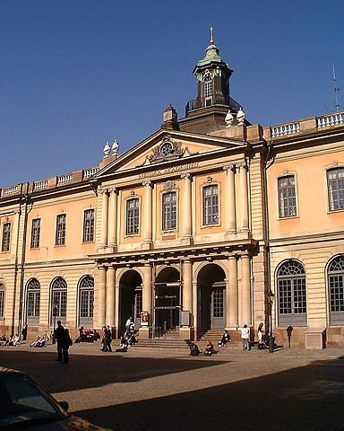

Nobelpriset
Alfred Nobel specificerade att ett av prisen skulle gå till den som under det gångna året inom litteraturen har producerat det utmärktaste i idealisk rigtning
. Pristagare utses av Svenska Akademien och tillkännages i oktober varje år av dess ständige sekreterare i Börshuset i Gamla stan, Stockholm. Priset delas ut den 10 december i Stockholms konserthus då pristagarna får ta emot priset ur kungens hand. Priset har delats ut sedan 1901, och består av medalj och en penningsumma (10 miljoner kronor år 2020).
I sitt testamente, daterat Paris den 27 november 1895, angav Alfred Nobel litteratur som ett av de fem områden som nobelpriset skulle delas mellan, jämte tre naturvetenskapliga pris och ett fredspris. Han fastslog att litteraturpriset ska tilldelas en författare som under det förlupne året hafva gjort menskligheten den största nytta
genom att skriva det utmärktaste i idealisk rigtning
, och det var Nobels uttryckliga vilja att vid prisutdelningarne intet afseende fästes vid någon slags nationalitetstillhörighet sålunda att den värdigaste erhåller priset, antingen han är Skandinav eller ej
.
2018 delades inget Nobelpris i litteratur ut pga rådande omständigheter inom Akademin
. Under året hade flera ledamöter i den 18 personer stora Svenska Akademin meddelat att de inte längre tänkte delta i akademins arbete beroende på hanteringen av den personen som i media kallades för "kulturprofilen". I efterdyningarna av #metoo-kampanjen anklagades en av akademins medlemmars make för att bland annat ha läckt information om kommande pristagare mm. Det hela gjorde att inte mindre än 7 av de 18 ledamöterna avsade sig uppdraget som ledamot i den av Gustav III instiftade samlingen av Aderton Herrar ock Män, till Svenska Språkets stadgande ock upodlande, samt till öfning för Vältaligheten ock Svenska skaldekonsten
.
2018 års pris tilldelades Olga Tokarczuk och delades ut följande år tillsammans med 2019 år pristagare Peter Handke